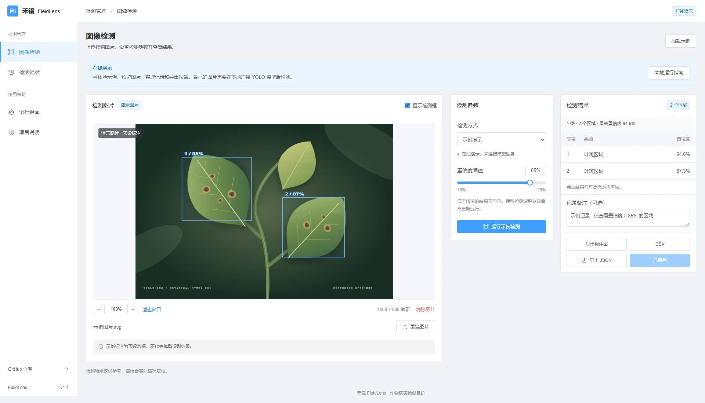
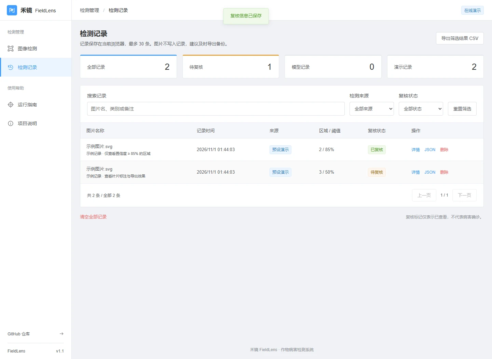

禾镜 FieldLens
一个用于作物图片检测与结果复核的工作台。这次改进围绕实际操作：怎样开始、怎样看清结果、怎样导出，以及怎样找回一条记录。
公开页面是交互演示，示例图片和检测框均为预设数据。真实 YOLO 推理需要在本地配置有授权的目标检测权重；本项目没有发布模型精度或病害确诊结论。
检测工作台

从用户问题到具体修复
| 用户会遇到的问题 | 改进后的操作 |
|---|---|
| 在线页面能直接识别自己的图片吗？ | 在操作前显示能力说明。在线版禁用真实检测入口，并提供 Windows、macOS / Linux 本地运行步骤。 |
| 图片里的检测区域太小，看不清楚。 | 新增 50%–300% 相对缩放与适应窗口，检测框同步缩放；可隐藏框查看原图。 |
| JSON 不便于给同事看，也不便于整理。 | 可导出带标注的 PNG、CSV 表格和 JSON。PNG、CSV 明确保留“演示”来源，CSV 可按筛选结果导出。 |
| 重复点击保存，出现多条相同记录。 | 同一次检测、同一阈值重复保存会被阻止；修改备注更新原记录。 |
| 找不到某个样本，也不知道哪些还没看。 | 按图片名、类别、备注搜索，结合检测来源和复核状态筛选，支持分页与真实记录统计。 |
| 记录只有数字，没法写复核意见。 | 详情展示类别、置信度和归一化坐标，可添加备注、标记已查看。原始图片不会写入浏览器记录。 |
| 只想删错的一条记录，却只能全部清空。 | 新增单条删除和确认提示；清空全部保留为独立操作。 |
| 选错图片或检测等太久，怎么退出？ | 可清除当前图片、取消等待。防止旧图片读取完成后覆盖新选择；取消后不生成成功记录。 |
记录检索与人工复核

实现与验证
- 前端：原生 ES Modules、Vite、Canvas；参考 Element UI 的后台界面样式。
- 本地服务：Flask、Pillow、可选 Ultralytics YOLO。上传图片在内存中处理，不随仓库分发模型权重。
- 记录：浏览器本地存储，最多 30 条；导出可备份，但不跨设备同步。
- 验证：前端数据测试、后端接口测试和浏览器流程检查；覆盖移动端布局、导出、筛选、复核、删除与失败状态。
- 实际模型精度、不同设备推理速度和田间效果尚未评估。
FieldLens: a user-centered inspection workflow
Review crop images, zoom into detection regions, export annotated PNG/CSV/JSON reports, and manage inspection records with searchable notes and review status. The public demo uses synthetic artwork and preset annotations. Real YOLO inference requires an authorized local model; no crop-model accuracy claims are made.